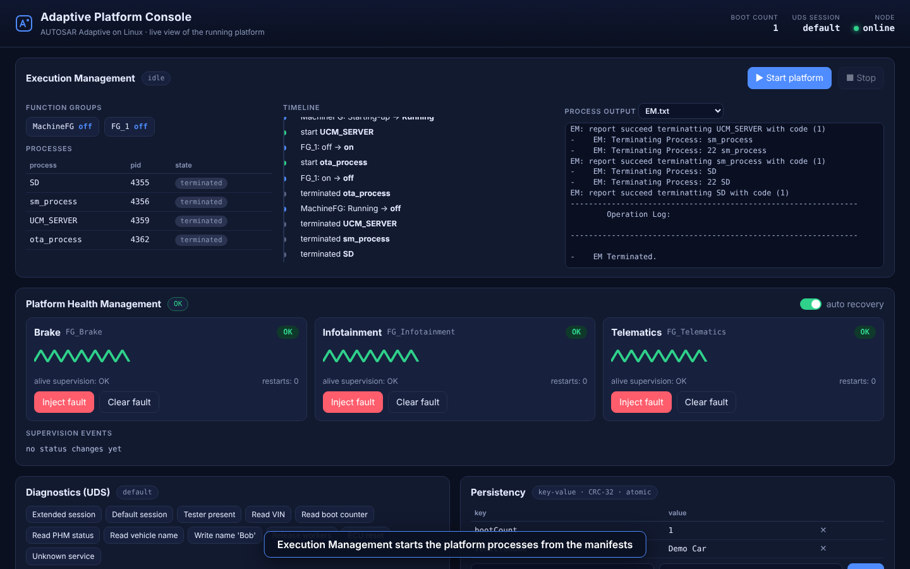

Adaptive Platform Console
ap_dashboard is a self-contained demo node: it hosts the new clusters (ara::phm, ara::diag, ara::per,
ara::crypto, ara::log) and controls the legacy Execution Management process, then serves a web UI
and a small JSON API. It is meant for local demos and for end-to-end testing — it binds to 127.0.0.1 by default
and has no authentication, so do not expose it to a network.
ap_dashboard [--port 8080] [--bind 127.0.0.1] [--data-dir DIR] [--platform-dir DIR] [--web-root DIR]
--platform-dir must contain Adaptive_Platform, Manifests/ and processes/ (the build tree's App/ folder, which is
the default when the binary is run from the build tree).
Walkthrough
1 · Execution Management
Start platform launches the real Execution Management process. It reads the machine and execution manifests, changes function-group states and starts/terminates the SD, SM, UCM and OTA processes as the State Manager requests. The console parses its log into function-group states, a process table and a timeline, and lets you browse each process' output.

2 · Platform Health Management
Three supervised workers (Brake, Infotainment, Telematics) report alive checkpoints every 50 ms; each is
supervised by an alive supervision (4 ± 2 indications per 200 ms) inside its own function group.
- Inject fault stops a worker's heartbeat → supervision
OK → FAILED → EXPIRED. - With auto recovery on, the recovery action restarts the function group (off → on) and the worker returns to
OK. - With it off, the recovery action declines (
kSMCanNotHandleRecovery) → PHM escalates to the watchdog and the console shows the reset banner. Reset ECU re-initialises the platform and increments the boot counter.
| Recovered | Watchdog |
|---|---|
 |
 |
3 · Diagnostics (UDS)
A transport-independent UDS server: session control with S3 timeout, ReadDataByIdentifier, WriteDataByIdentifier,
TesterPresent, ECUReset and a routine. Writing the vehicle name is rejected in the default session
(7F 2E 31) and accepted in the extended session; the value is stored through ara::per.

4 · Persistency and Cryptography
Edit the key-value store (CRC-protected, atomically persisted), or try AES-GCM sealing — flipping one bit of the ciphertext is detected — and Ed25519 / ECDSA signatures.
| Persistency | Cryptography |
|---|---|
 |
 |
Demo video
doc/img/platform-demo.mp4 (≈ 75 s) shows the whole scenario. Regenerate it with:
ap_dashboard --port 8099 &
python3 Tools/demo/record_demo.py --out doc/img --video
The script waits on real platform state instead of fixed delays and exits non-zero if something misbehaves (a fault is not detected, a write is not read back, tampering is not caught), so it also runs in CI.
JSON API
| Endpoint | Purpose |
|---|---|
GET /api/overview?since=<seq> |
state of PHM, UDS session, persistency, EM, plus new log lines |
POST /api/phm/hang · /api/phm/heal {"name":"Brake"} |
inject / clear a fault |
POST /api/phm/auto-recovery {"enabled":false} |
choose the recovery behaviour |
POST /api/system/reset |
simulate the watchdog / ECU reset |
POST /api/diag {"request":"22 F1 90"} |
send a UDS request |
POST /api/per/set · /api/per/delete |
edit the key-value store |
POST /api/crypto/{hash,hmac,seal,open,sign,verify} |
crypto playground |
POST /api/em/start · /api/em/stop, GET /api/em/log?name=EM.txt |
control and observe Execution Management |